Learning Goals
At the end of this Tutorial, you will be able to:
- Understand the importance of adding negative space between elements in web design.
- Use the CSS margin property to apply spacing around HTML block level text tags.
- Use the CSS padding property to apply padding around the HTML container/semantic tags.
- Use media queries to create responsive layouts on a web page for the 768px breakpoint.
Layout and ‘negative space’
The term layout describes the placement of content elements - such as text and images - on a printed page or electronic screen. An important part of layout is the spacing between different elements.
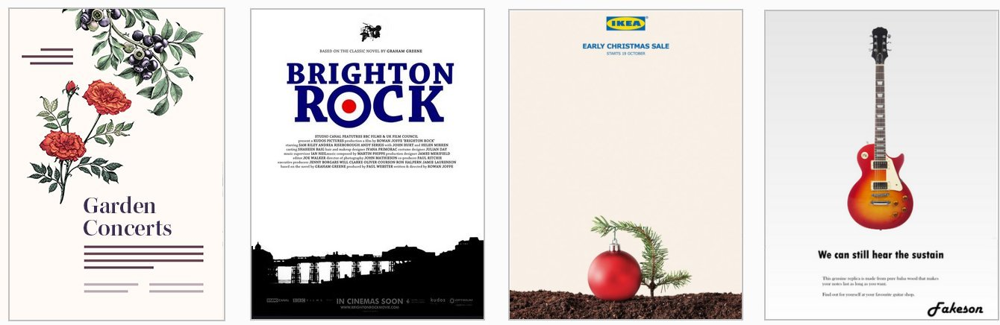The term white space comes from the world of print design where content – text and images – are printed (mostly) on white-coloured paper. White space means space in a design layout that is empty. Although it contains nothing, white space is just as important as any of the content it surrounds for this reason: it makes text more inviting to read.
Because electronic screens – and modern printing processes – can create almost any background colour, the original term of white space is increasingly known by the alternative term of negative space.
Here are some examples of negative space in use in web design.

Below are links to a number of helpful resources about negative space in web design.
Whitespace in Web Design: What It Is and Why You Should Use It
From Gisele Muller on Treehouse.
A Guide to Effective Use of White Space in Web Design
From Joanne Amos on Flywheel.
White Space Design: 20 Striking Examples and Best Practices
From Joseph Downes on Just in Mind.
What Is Whitespace? 9 Websites to Inspire Your Web Design
From Karla Cook on HubSpot Marketing Blog.
White-Space at Work: Why Less is More in Your Website Design
From Sherice Jacob on Crazyegg Blog.
White Space - A Perfect Option For Improving Usability In Web Designs
From Isabella Morris on Usability Geek.
In web design, the two important CSS properties that control spacing are margin and padding. Let's look at each property in turn.
Margins and layout
The margin property in CSS controls the space between different elements on a web page. It is used to create space around elements.
You will want to use margins to add some vertical (top and bottom) spacing between block-level content elements such as <h1>, <h2> <h3> and <p>.
The simplest way to set margin values is in pixels or px for short.
On the left below, you can see CSS margin rules for the h3 and p selectors in your sample style-1.css stylesheet. And on the right, you can see how these margin rules control the display of the h3 and p elements in the linked page-1.html web page.
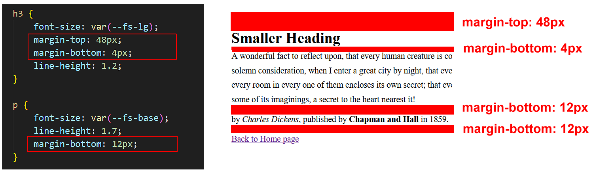A web page without vertical (top and bottom) margins around text elements would be very difficult to read.
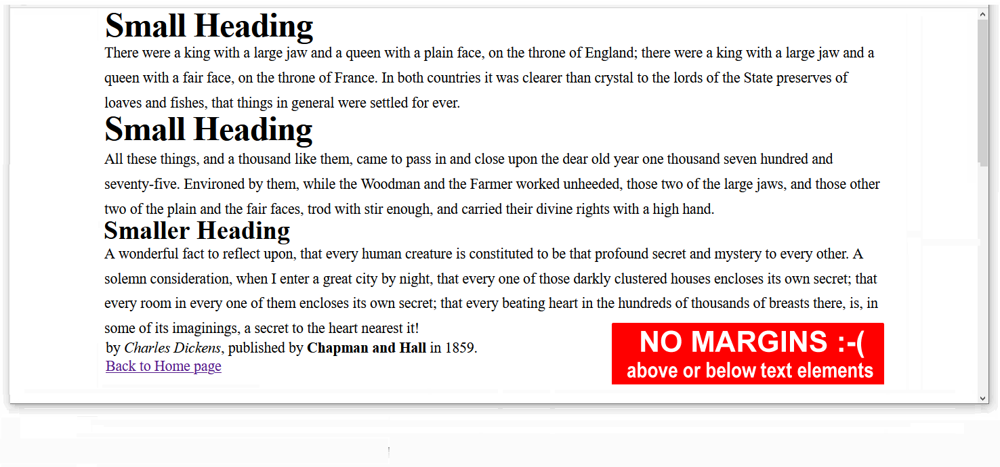Padding and layout
The padding property sets the internal spacing within an HTML element. You will typically use padding for container/semantic elements such as <nav>, <header>, <section>, and <footer>.
Consider the web pages below from four websites, as displayed on a laptop or desktop screen.

To achieve this effect in CSS, you could set padding values in percentages % for the <section> containers such as those shown below.
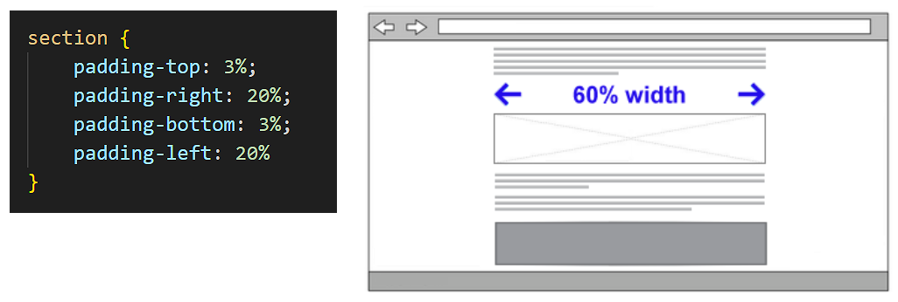On laptop or desktop screens, the maximum line length for easy readability of text is around 65-75 characters. That is why you should adding generous left and right negative space for this single-column layout.
About Responsive Web Design (RWD)
As a web designer, you have no control over the size of the screen on which your web pages will be displayed.
The term viewport is used to describe that area of a web browser screen that displays a web page’s content. It excludes any menus, web address bars, bookmark bars, scroll bars or other similar elements.
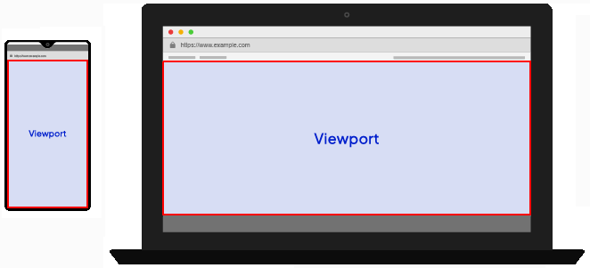Here are typical viewport widths for different devices:
- Mobile phones: 390px - 480px
- Large phones/Small tablets: 480px - 768px
- Tablets (like iPads): 768px - 1024px
- Laptops/Desktops: 1024px - 1920px
- Large screens: 1920px and above
Creating web pages that respond or ‘scale‘ appropriately to the viewport size of a user’s device is called Responsive Web Design (RWD). Responsive web pages adjust the layout, placement, and size of their elements so that the page looks good no matter what screen it’s being viewed on.
About breakpoints
When designing for such a wide range of viewport sizes, web designers rely on what are called breakpoints. These are the viewport widths at which the page layout needs to change.

For example, a three-column layout may display nicely on larger screens – but on mobile devices it will necessary to transform the layout into just a single column.
For most designs, however, it is sufficient to use just one breakpoint: 768px.
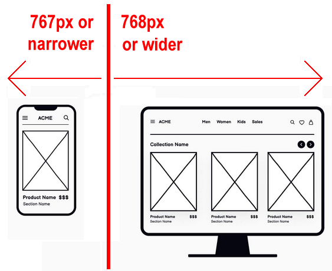This is the viewport width of an Apple iPad in portrait ('standing up') orientation. So:
- Big viewports: These are viewports that are 768 pixels wide or wider. In other words, viewports with a min-width value of 768px.
- Small viewports: These are viewports that are 767 pixels wide or narrower. In other words, viewports with a max-width value of 767px.
About media queries
Consider again the four sample web pages shown previously. The responsive padding effect you want to achieve looks as follows.

- On ‘big screens‘ (768px or wider), you might want the web page content to fill only 60% of the viewport width.
- On ‘small screens‘ (up to 767px width), however, you might want the web page content to fill 90% of the viewport width.
CSS offers so-called media queries that, when combined with breakpoints, enable you apply different CSS rules depending on the viewport width. See below.
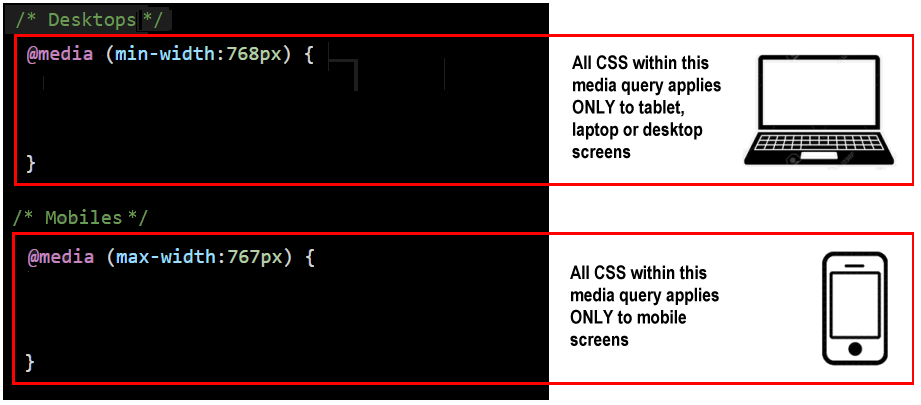If you open and display your sample-1.css stylesheet in VS Code, you will see the responsive padding values for the header and section containers shown below.
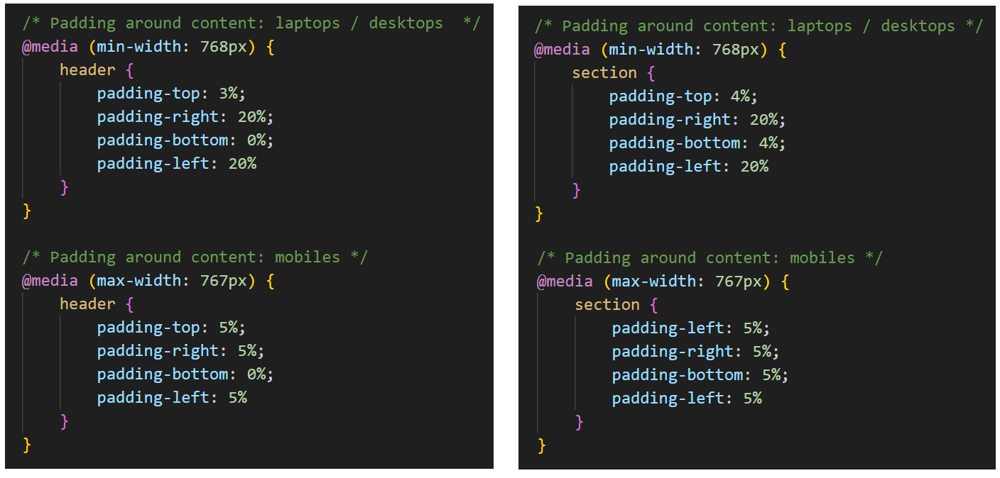CSS Shorthand and the TROUBLE mnemonic
CSS shorthand properties allow you to set multiple CSS properties on a single line.
So instead of typing these four lines:
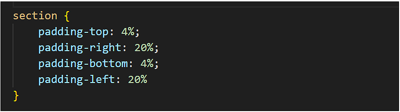You could simply type the following one line:
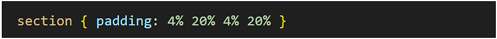But which one these four values refers for the top edge of the element? Or the left edge?
Web designers rely on a memory trick or mnemonic to help them remember which edges of an element are set by four padding values written on a single line.
The mnemonic is the word TROUBLE.
Or:
T(op), R(ight), OU B(ottom) and L(eft) E.
If the left and right values are the same, you could write this:
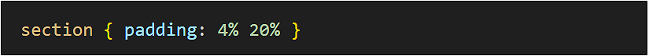And if all four values are the same, you could weite this:
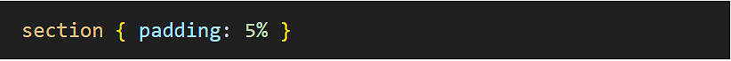As an exercise, open your style-1.css stylesheet in VS Code, and apply the CSS shorthand to the padding style with the header and section declarations.
Uploading your work to Github
You are now ready to upload your work to your account on Github.
- Open a new tab in your web browser and go to Github.com. If you are not already signed in to your Github account, sign in now.

- On your Github home page, click the name of the repository (‘repo’) that holds your web pages. Its name will look as follows, where username is your chosen username on Github.
username.github.io

- On the next Github screen displayed, near the right of the screen, you can see a button named Add file. Click on it. 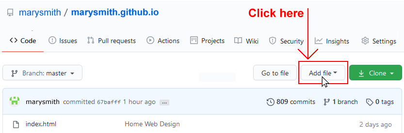
- From the dropdown list displayed, choose the option Upload files.

- In File Explorer (Windows) or Finder (Apple Mac), drag-and-drop your index.html file and your 📁 assets and 📁 exercises sub-folders to upload them to your repository on Github. 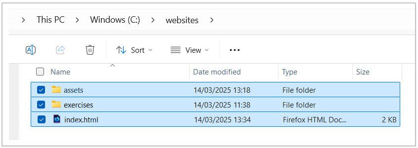
- Scroll down to the bottom of the Github screen, and accept or edit the short message (Add files via upload) in the Commit changes box.
- Finally, click the green Commit changes button to upload your entire exercises sub-folder and all the files it contains.

Your web pages are now published on Github at web addresses similar to the following, where username is the username you have chosen for your Github account:
https://username.github.io/index.html
– or simply –
https://username.github.io
https://username.github.io/exercises/page-1.html
https://username.github.io/exercises/page-2.html
https://username.github.io/exercises/page-3.html
It may take a few minutes for your uploaded files to appear on Github.